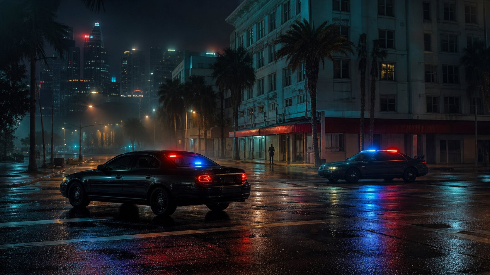

Six étoiles à l’écran
La vidéo officielle en jeu montre le retour d’un niveau de recherche à six étoiles. Les reviews décrivent une escalade plus forte et des recherches après la poursuite immédiate.

POLICE & HEAT · ÉVASION BASÉE SUR LES TESTS
La poursuite et la recherche persistante sont deux phases différentes selon les reviews. Voici une routine d’évasion documentée, sans surpromettre une astuce infaillible.
L’Extended Look de Rockstar montre une poursuite avec six étoiles et une zone de recherche à la carte; des previews et reviews décrivent témoins, alarmes, identification par apparence/vêtements/véhicule et une pression qui peut persister après la perte de vue. Les médias n’emploient pas toujours exactement les mêmes termes pour les états des étoiles ou les icônes : ce guide présente les principes recoupés, pas une légende officielle complète de l’interface.
La vidéo officielle en jeu montre le retour d’un niveau de recherche à six étoiles. Les reviews décrivent une escalade plus forte et des recherches après la poursuite immédiate.
Des critiques décrivent des indices liés à l’apparence, aux vêtements, au véhicule, au partenaire et aux caméras. Chaque détail non effacé peut maintenir un risque de reconnaissance même après la fuite initiale.
Les recommandations ci-dessous synthétisent les observations de Press Start, RPGamer et d’autres critiques. Aucune n’est une garantie : gravité du crime, progression, témoins et emplacement modifient la situation.
| Indice rapporté | Réponse souvent décrite | Nuance |
|---|---|---|
| Vêtement / apparence | Changer de tenue ou modifier certains aspects de l’apparence selon l’indice affiché. | Une casquette ou des lunettes ne remplacent pas nécessairement une tenue complète; les critiques distinguent ces informations. |
| Véhicule | Abandonner ou remplacer le véhicule reconnu, si la situation le permet. | Les trackers et niveaux de sécurité sont des mécaniques distinctes; ne pas supposer qu’un changement efface toute chaleur. |
| Caméras / témoins | Certains reportages mentionnent la suppression d’images CCTV; la discrétion préalable peut limiter l’identification. | Les détails diffèrent selon le lieu; ne présume pas que toutes les caméras ont une salle de sécurité accessible. |
| Arme / partenaire identifié | Les tests parlent de ranger une arme, changer d’équipement ou se séparer si la police cherche le duo. | Effets précis sur les étoiles non établis uniformément par toutes les reviews. |
| Recherche persistante | Quitter la zone et attendre que l’attention baisse avant d’y retourner. | La durée et la taille peuvent dépendre du crime; pas de chrono universel fourni. |